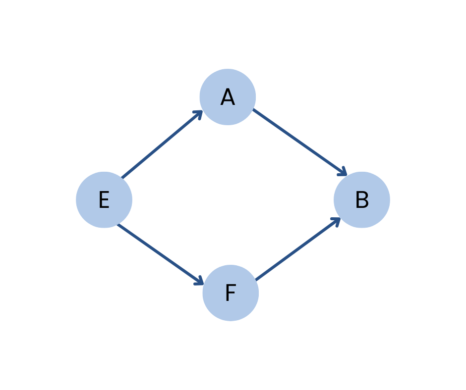

Directed Graph
A directed graph, also known as a digraph, is a graph in which every edge has a direction assigned to it. This means that the nodes are ordered pairs in the definition of every edge.
An edge of a directed graph is given as an ordered pair (u, v) of nodes in G. For an edge (u, v):
- The edge begins at u and terminates at v.
- u is known as the origin or initial point of the edge, while v is known as the destination or terminal point.
- u is the predecessor of v, and v is the successor of u.
- Nodes u and v are adjacent to each other.

Terminology of a Directed Graph
- Out-degree of a node: The out-degree of a node u, written as outdeg(u), is the number of edges that originate at u.
- In-degree of a node: The in-degree of a node u, written as indeg(u), is the number of edges that terminate at u.
- Degree of a node: The degree of a node, written as deg(u), is equal to the sum of in-degree and out-degree of that node. Therefore, deg(u) = indeg(u) + outdeg(u).
- Isolated vertex: A vertex with degree zero, meaning it is not an end-point of any edge.
- Pendant vertex (also known as leaf vertex): A vertex with degree one.
- Cut vertex: A vertex which, when deleted, would disconnect the remaining graph.
- Source: A node u is known as a source if it has a positive out-degree but a zero in-degree.
- Sink: A node u is known as a sink if it has a positive in-degree but a zero out-degree.
- Reachability: A node v is said to be reachable from node u if there exists a directed path from node u to node v.
Applications
- Social Networks: Social networks are often modeled as directed graphs, where each person is a vertex and relationships such as friendships or following are represented as edges.
- Transportation Networks: Transportation systems such as roads, airports, or subway systems can be modeled as directed graphs, with vertices representing locations and edges representing connections between them.